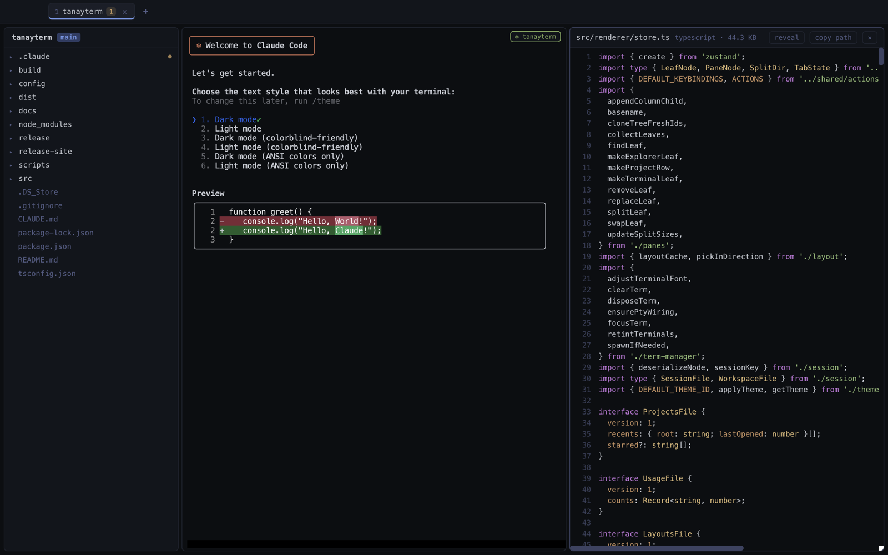
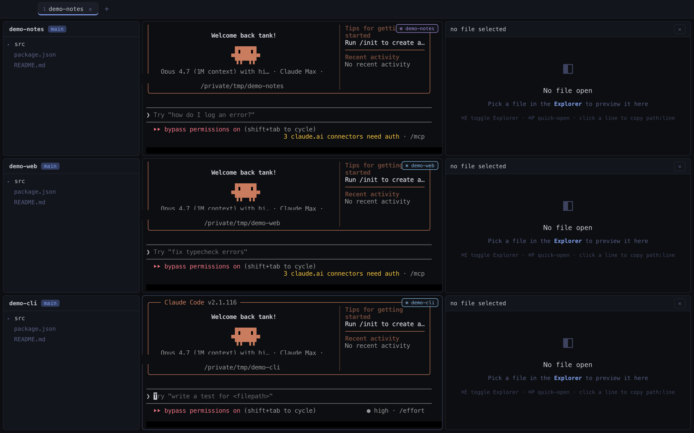

The only window
you need.
A terminal, a real browser, and Claude Code — under one roof.

Free. The app has no account and no telemetry — it phones nothing home. One developer's daily driver, shared.
A terminal, a real browser, and Claude Code — under one roof.
Free. The app has no account and no telemetry — it phones nothing home. One developer's daily driver, shared.

Real screenshots — tterm took them of itself. The real chords work right here: ⌘K, ⌘G, ⌘B… click the window for the rest.
⌘K → Claude on tterm itself — ask for a feature and the running app hot-reloads with it. Most of tterm was built this way.

Explorer, Claude Code, file viewer — stack as many projects as you're juggling.

⌘B — your Chrome cookies, bookmarks, and history come along.

No editor, on purpose. ⌘G — stage what's right, hunk by hunk, and commit.

Only ⌘-chords are ever intercepted — every ctrl key reaches the pty untouched.
skiff
noun [ C ] /skɪf/
a small, light boat for rowing or sailing, usually used by only one person
Apple silicon (M1 or later) · macOS 12+ · Claude Code installed. Intel Macs aren't supported.
Unzip, drag tterm.app to Applications, then clear the download flag:
xattr -dr com.apple.quarantine /Applications/tterm.appIt's an ad-hoc-signed hobby build (not notarized), so macOS quarantines it until you run that once (or right-click → Open, then Open Anyway under System Settings → Privacy & Security). No account, no telemetry, nothing phoning home.